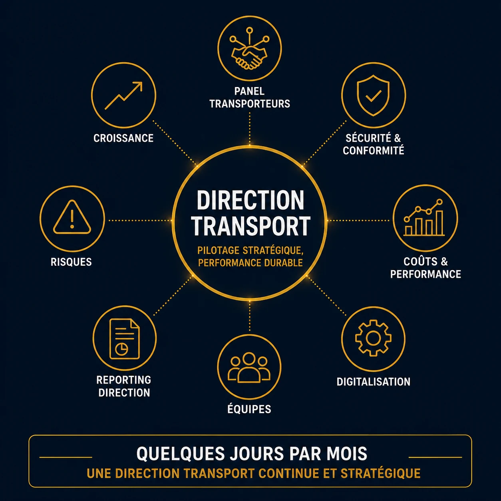

Vos opérations transport (national, européen, international) gagnent en complexité et nécessitent un pilotage dédié, sans justifier nécessairement un recrutement à temps plein.
La Direction Logistique / Transport Fractionnée STRANEXO vous permet de bénéficier rapidement d'une expertise de direction spécifiquement dédiée à vos enjeux transport. Selon votre organisation, cette intervention peut prendre la forme d'une Direction Logistique Fractionnée ou d'une Direction Transport Fractionnée.
J'interviens aux côtés de votre direction pour piloter la performance de vos opérations transport, sécuriser vos prestataires et faire progresser votre organisation. Votre entreprise reste seule mandataire et contractante directe avec les transporteurs ; je n'interviens pas en tant que commissionnaire de transport.

Les leviers habituels (renégociation ponctuelle) ne suffisent plus à contenir la hausse de vos coûts transport.
National, européen, international : vos prestataires se multiplient sans pilotage centralisé.
Un responsable transport ou logistique quitte l'entreprise. Vous avez besoin d'une expertise de direction pour maintenir le pilotage.
Vous souhaitez structurer votre fonction transport avant de créer un poste permanent ou avant une nouvelle phase de développement.
Mon rôle est d'accompagner votre direction dans la structuration, le pilotage et l'évolution de votre organisation transport et logistique.
J'évalue et je sécurise votre panel transporteurs, en m'appuyant sur une expérience opérationnelle du sourcing, de la conformité et de la gestion des risques transport.
Chaque intervention est construite autour de vos priorités, avec un objectif simple : renforcer votre organisation tout en faisant monter vos équipes en compétence.
Vous disposez d'une vision claire de vos coûts, de vos délais et de vos priorités transport.
Vos prestataires sont sélectionnés, évalués et pilotés selon des critères clairs, à chaque échelle géographique.
Vous réduisez vos risques opérationnels et réglementaires grâce à une meilleure maîtrise de la conformité de vos prestataires.
Vous vous appuyez sur des indicateurs fiables afin de piloter votre performance transport avec davantage de visibilité.
Votre organisation transport évolue au rythme de votre entreprise, sans créer de rupture dans vos opérations.
Vos équipes gagnent en autonomie sur le pilotage quotidien de vos opérations transport.
J'interviens quelques jours par mois, à vos côtés, pour donner à votre fonction transport une direction continue sans les contraintes d'un recrutement à temps plein.
Suivi des coûts, des délais et de la performance de vos opérations transport, à chaque échelle géographique.
Identification des leviers d'économies durables et suivi des plans d'action associés.
Reporting stratégique mensuel et appui aux décisions concernant votre fonction transport.
Assurer le pilotage KPI et la performance transport d'une PME multi-sites en croissance.
Superviser dans la durée la performance et la conformité d'un panel transporteurs déjà en place.
Auditer et sécuriser la conformité réglementaire de vos prestataires transport.
Maintenir le pilotage des opérations transport après le départ ou l'absence d'un responsable.
Accompagner un projet d'évolution de vos outils de pilotage transport (TMS) et la conduite du changement associée.
Accompagner la montée en compétence d'un futur responsable transport et renforcer durablement l'organisation.
Non. J'interviens uniquement en conseil et en pilotage. Votre entreprise reste seule mandataire et contractante directe avec les transporteurs.
La Direction Logistique / Transport Fractionnée se concentre spécifiquement sur votre fonction transport et logistique. La Direction Supply Chain Fractionnée couvre le pilotage de l'ensemble de votre organisation Supply Chain (achats, logistique, production, ventes).
L'expertise Transport est une mission ciblée visant à analyser une situation et à accompagner la mise en œuvre de leviers d'amélioration. La Direction Logistique / Transport Fractionnée consiste à assurer le pilotage de votre fonction transport dans la durée, quelques jours par mois.
Non. L'objectif est de caler le temps d'intervention sur le rythme réel de votre activité transport : quelques jours par mois suffisent souvent pour structurer, sécuriser et piloter durablement, sans les contraintes d'un poste à temps plein.
Je vous propose un premier échange de 30 minutes pour comprendre votre organisation, vos enjeux et identifier si ce mode d'accompagnement répond à vos besoins.
📞 +33 7 68 62 13 03
✉️ axel@stranexo.com